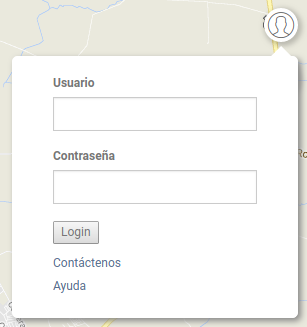

Menú de Login

Posición del login
El menú de login permite:
El botón para acceder a la aplicación Panel de Administración solo está visible y accesible por usuarios autenticados y autorizados
A través de la herramienta de autenticación (Login) es posible acceder al Geoportal con autorización para ejecutar funcionalidades avanzadas, ingresando el nombre del Usuario y relativa Contraseña.
Usuario y Contraseña están definidos por el Administrador del sistema a través del Panel de Administración